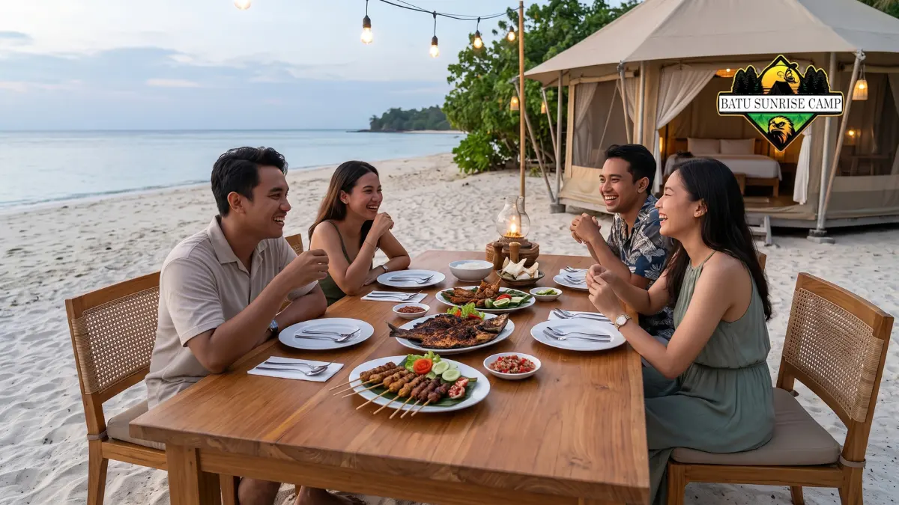

Rincian biaya glamping pantai meliputi tarif tenda, makan, aktivitas, dan transportasi, dengan estimasi total satu malam sekitar Rp750.000 hingga Rp2.100.000 pada 2026.
Apa saja komponen dalam rincian biaya glamping pantai?
Komponen biaya glamping pantai terdiri dari tarif tenda, makan, aktivitas, transportasi, dan biaya tambahan seperti sewa alat atau tambahan kasur.
Komponen pertama adalah tarif tenda per malam, yang menjadi porsi terbesar. Pada 2026, laporan VIVA Bali menyebut rentang Rp500.000 hingga Rp1.800.000 untuk glamping pesisir, tergantung kemewahan tenda dan lokasi.
Komponen kedua adalah makan. Bila paket hanya mencakup sarapan, wisatawan perlu menganggarkan makan siang dan makan malam.
Sebagian glamping menyediakan restoran di lokasi, sedangkan sebagian lain mengharuskan tamu membeli makanan di warung sekitar atau memesan paket barbekyu.
Komponen ketiga adalah aktivitas, seperti snorkeling, kano, bersepeda, atau api unggun. Komponen keempat adalah transportasi menuju lokasi, yang bergantung pada jarak dan moda perjalanan.
Komponen kelima adalah biaya tambahan, misalnya tambahan tamu, peminjaman perlengkapan, dan biaya parkir.
Berapa total budget glamping pantai untuk satu malam?
Total budget glamping pantai untuk satu malam pada 2026 berada di sekitar Rp750.000 hingga Rp2.100.000 untuk tenda, makan, dan aktivitas, di luar biaya perjalanan.
Industry.co.id pada Juli 2026 memberi rincian gambaran biaya glamping: akomodasi Rp500.000 hingga Rp1.600.000 per malam, makan Rp150.000 hingga Rp300.000, dan aktivitas Rp100.000 hingga Rp200.000. Jumlah totalnya adalah Rp750.000 hingga Rp2.100.000. Sumber: Industry.co.id, Juli 2026.
Sumber tersebut membahas glamping secara umum dan tidak memerinci seluruh asumsi, misalnya jumlah orang.
Karena itu, angka ini sebaiknya dipakai sebagai patokan awal, bukan harga pasti. Tarif pada tiap lokasi tetap perlu dikonfirmasi ke pengelola.
Angka transportasi tidak dimasukkan karena sangat bergantung pada asal keberangkatan. Wisatawan perlu menambahkan biaya bensin, tol, tiket, atau sewa kendaraan sesuai rute mereka.
Bagaimana simulasi budget glamping pantai hemat, menengah, dan premium?
Simulasi budget glamping pantai dapat disusun dari batas bawah, titik tengah, dan batas atas rentang biaya 2026, sehingga wisatawan punya target anggaran yang jelas.
Simulasi berikut memakai rentang dari Industry.co.id pada Juli 2026 dan belum termasuk transportasi. Angka titik tengah dihitung dari rata-rata batas bawah dan atas tiap komponen.
| Skenario | Tenda | Makan | Aktivitas | Total |
|---|---|---|---|---|
| Hemat | Rp500.000 | Rp150.000 | Rp100.000 | Rp750.000 |
| Menengah | Rp1.050.000 | Rp225.000 | Rp150.000 | Rp1.425.000 |
| Premium | Rp1.600.000 | Rp300.000 | Rp200.000 | Rp2.100.000 |
Skenario hemat cocok untuk wisatawan yang mengutamakan pengalaman dasar dan mengurangi aktivitas berbayar.
Skenario menengah cocok untuk pasangan atau keluarga kecil yang ingin nyaman tanpa berlebihan.
Skenario premium cocok untuk momen istimewa seperti perayaan ulang tahun atau bulan madu.
Untuk glamping di pantai yang tarif tendanya mendekati Rp1.800.000 seperti batas atas laporan VIVA Bali, tambahkan selisih sekitar Rp200.000 pada skenario premium.

Makan malam bersama kelompok teman di meja kayu tepi pantai di depan tenda glamping saat senja.
Bagaimana cara membagi biaya glamping pantai untuk rombongan?
Biaya glamping pantai untuk rombongan dibagi dengan menjumlahkan seluruh pengeluaran bersama, lalu membaginya rata menurut jumlah orang, dengan penyesuaian bila ada anggota yang tidak ikut aktivitas tertentu.
Langkah pertama, catat semua biaya bersama: tenda, makan kelompok, sewa alat, dan bensin. Langkah kedua, pisahkan biaya pribadi seperti jajan dan oleh-oleh agar tidak tercampur.
Sebagai contoh, tenda berkapasitas empat orang seharga Rp1.150.000 berarti sekitar Rp287.500 per orang untuk akomodasi.
Contoh ini memakai angka tarif Deluxe Glampcamp akhir pekan di Banyuwangi yang dilaporkan Discover Banyuwangi pada Desember 2024, untuk empat orang.
Hasil ini menunjukkan mengapa berangkat berkelompok sering menurunkan biaya per kepala.
Gunakan satu orang sebagai bendahara dan catat pengeluaran di ponsel. Pastikan pula seluruh anggota sepakat sejak awal mengenai batas anggaran aktivitas berbayar agar tidak muncul perbedaan pendapat di lokasi.
Apa saja biaya tersembunyi yang sering muncul saat glamping di pantai?
Biaya tersembunyi glamping pantai antara lain biaya tamu tambahan, sewa alat, paket barbekyu, parkir, dan denda kebersihan, sehingga tagihan akhir bisa melebihi tarif yang tertera.
Biaya tamu tambahan sering muncul bila jumlah orang melebihi kapasitas standar. Biaya ini kadang berupa tarif tambahan per orang atau tambahan kasur.
Sewa alat, misalnya perlengkapan snorkeling, kano, atau papan selancar, umumnya dihitung per jam atau per sesi.
Paket barbekyu dan api unggun biasanya dijual terpisah. Beberapa lokasi juga menarik biaya parkir atau retribusi kawasan, meskipun sebagian pengelola sudah memasukkannya ke dalam tarif.
Cara menghindari kejutan biaya adalah meminta rincian tertulis melalui pesan atau surel sebelum membayar.
Tanyakan juga kebijakan kerusakan, jam check-in dan check-out, serta biaya keterlambatan.
Bagaimana cara menyiapkan dana cadangan untuk glamping pantai?
Dana cadangan glamping pantai sebaiknya sekitar sepersepuluh dari total budget, untuk menutup biaya tak terduga seperti perubahan cuaca, tambahan makan, atau sewa alat.
Sebagai contoh, bila budget menengah adalah Rp1.425.000, dana cadangan yang wajar sekitar Rp140.000. Angka ini adalah pedoman praktis, bukan aturan baku, dan dapat disesuaikan dengan kebutuhan.
Dana cadangan berguna bila cuaca berubah dan aktivitas yang direncanakan batal, sehingga wisatawan perlu mengganti dengan kegiatan lain.
Dana ini juga membantu bila ada kebutuhan mendadak seperti obat, perlengkapan tambahan, atau makanan di luar paket.
Bila dana cadangan tidak terpakai, uangnya tetap aman. Pendekatan ini lebih baik daripada mengurangi kualitas perjalanan karena kekurangan dana di lokasi.
Bagaimana rincian biaya ini berhubungan dengan harga tenda?
Harga tenda adalah komponen terbesar dalam rincian biaya, sehingga memahami kisaran tarif glamping pantai membantu menetapkan batas anggaran sejak awal.
Untuk gambaran umum tarif per kelas dan faktor penentunya, baca panduan harga glamping di pantai 2026. Panduan tersebut menjelaskan mengapa dua tenda di pantai yang sama dapat berbeda harga.
Kesimpulan
Rincian biaya glamping pantai pada 2026 dapat dibagi menjadi tenda, makan, aktivitas, transportasi, dan dana cadangan.
Estimasi total satu malam sekitar Rp750.000 hingga Rp2.100.000 untuk tenda, makan, dan aktivitas.
Langkah praktis: tentukan skenario budget, minta rincian tertulis dari pengelola, sisihkan dana cadangan, dan bagi biaya rombongan secara transparan.
Dengan cara ini, anggaran liburan lebih terkendali dan pengalaman menginap tetap menyenangkan.